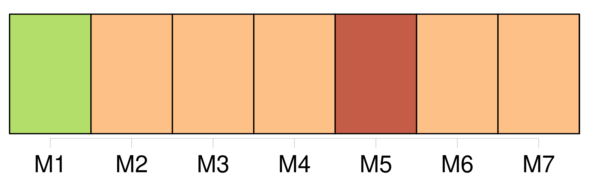

Longueur nb maillons : 318 mentions |
  |
[Deux hommes] parurent. [3 phrases]
Quand [ils] furent arrivés au milieu du boulevard, [ils] s'assirent, à la même minute, sur le même banc.
Pour s'essuyer le front, [ils] retirèrent [leurs] coiffures, que [chacun] posa près de [soi] ; et le petit homme aperçut, écrit dans le chapeau de son voisin : Bouvard ; pendant que celui -ci distinguait aisément dans la casquette du particulier en redingote le mot : Pécuchet.
— Tiens, dit -il, [nous] avons eu la même idée, celle d'inscrire [notre] nom dans [nos] couvre-chefs. [2 phrases]
Alors [ils] se considérèrent. [12 phrases] Et [leurs] yeux erraient sur des tas de pierres à bâtir, sur l'eau hideuse où une botte de paille flottait, sur la cheminée d'une usine se dressant à l'horizon ; des miasmes d'égout s'exhalaient. [Ils] se tournèrent de l'autre côté.
Alors [ils] eurent devant [eux] les murs du Grenier d'abondance. [3 phrases] Tout à coup un ivrogne traversa en zigzag le trottoir ; et, à propos des ouvriers, [ils] entamèrent une conversation politique.
[Leurs] opinions étaient les mêmes, bien que Bouvard fût peut-être plus libéral. [1 phrases] La vue de cette noce amena [Bouvard et Pécuchet] à parler des femmes, qu' [ils] déclarèrent frivoles, acariâtres, têtues. [14 phrases] [Leurs] paroles coulaient intarissablement, les remarques succédant aux anecdotes, les aperçus philosophiques aux considérations individuelles. [Ils] dénigrèrent le corps des ponts et chaussées, la régie des tabacs, le commerce, les théâtres, notre marine et tout le genre humain, comme des gens qui ont subi de grands déboires. [Chacun] en écoutant l'autre retrouvait des parties de lui -même oubliées.
Et bien qu' [ils] eussent passé l'âge des émotions naïves, [ils] éprouvaient un plaisir nouveau, une sorte d'épanouissement, le charme des tendresses à leur début.
Vingt fois [ils] s'étaient levés, [s'étaient rassis] et [avaient fait] la longueur du boulevard, depuis l'écluse d'amont jusqu'à l'écluse d'aval, chaque fois voulant s'en aller, n'en ayant pas la force, retenus par une fascination.
[Ils] se quittaient pourtant, et [leurs] mains étaient jointes, quand Bouvard dit tout à coup :
si [nous] dînions ensemble? [6 phrases] Ensuite, [ils] glorifièrent les avantages des sciences : que de choses à connaître!! [2 phrases] Hélas, le gagne-pain l'absorbait ; et [ils] levèrent les bras d'étonnement, [ils] faillirent s'embrasser par-dessus la table en découvrant qu' [ils] étaient [tous les deux] copistes, Bouvard dans une maison de commerce, Pécuchet au ministère de la marine ; ce qui ne l'empêchait pas de consacrer, chaque soir, quelques moments à l'étude. [5 phrases] Le repas fini, [ils] allèrent prendre le café dans un autre établissement. [34 phrases] Ceux de Pécuchet étaient Juste-Romain-Cyrille, — et [ils] avaient le même âge : quarante-sept ans. Cette coïncidence [leur] fit plaisir, mais [les] surprit, [chacun] ayant cru l'autre beaucoup moins jeune.
Ensuite, [ils] admirèrent la Providence, dont les combinaisons parfois sont merveilleuses.
— Car, enfin, si [nous] n'étions pas sortis tantôt pour [nous] promener, [nous] aurions pu mourir avant de [nous] connaître!
Et s'étant donné l'adresse de [leurs] patrons, [ils] se souhaitèrent une bonne nuit. [27 phrases] Ainsi [leur] rencontre avait eu l'importance d'une aventure. [Ils] s'étaient, tout de suite, accrochés par des fibres secrètes. [3 phrases]
Avant la fin de la semaine, [ils] se tutoyèrent. Souvent, [ils] venaient se chercher à [leur] comptoir. Dès que l'un paraissait, l'autre fermait son pupitre, et [ils] s'en allaient ensemble dans les rues. [1 phrases] De même [leurs] goûts particuliers s'harmonisaient. [8 phrases] Aucun [des deux] n'avait caché à [l'autre] son opinion. [Chacun] en reconnut la justesse.
[Leurs] habitudes changèrent et, quittant [leur] pension bourgeoise, [ils] finirent par dîner ensemble tous les jours. [Ils] faisaient des réflexions sur les pièces de théâtre dont on parlait, sur le gouvernement, la cherté des vivres, les fraudes du commerce.
De temps à autre, l'histoire du Collier ou le procès de Fualdès revenait dans [leurs] discours ; et puis, [ils] cherchaient les causes de la Révolution. [Ils] flânaient le long des boutiques de bric-à-brac. [Ils] visitèrent le Conservatoire des arts et métiers, Saint-Denis, les Gobelins, les Invalides et toutes les collections publiques.
Quand on demandait [leur] passeport, [ils] faisaient mine de l'avoir perdu, se donnant pour deux étrangers, deux Anglais. Dans les galeries du Muséum, [ils] passèrent avec ébahissement devant les quadrupèdes empaillés, avec plaisir devant les papillons, avec indifférence devant les métaux ; les fossiles [les] firent rêver, la conchyliologie [les] ennuya. [Ils] examinèrent les serres chaudes par les vitres, et [frémirent] en songeant que tous ces feuillages distillaient des poisons.
Ce qu' [ils] admirèrent du cèdre, c'est qu'on l'eût rapporté dans un chapeau. [Ils] s'efforcèrent au Louvre de s'enthousiasmer pour Raphaël.
À la grande bibliothèque, [ils] auraient voulu connaître le nombre exact des volumes. Une fois, [ils] entrèrent au cours d'arabe du Collège de France, et le professeur fut étonné de voir [ces deux inconnus] [qui] tâchaient de prendre des notes. Grâce à Barberou, [ils] pénétrèrent dans les coulisses d'un petit théâtre. Dumouchel [leur] procura des billets pour une séance de l'Académie. [Ils] s'informaient des découvertes, [lisaient] les prospectus, et, par cette curiosité, [leur] intelligence se développa.
Au fond d'un horizon plus lointain chaque jour [ils] apercevaient des choses à la fois confuses et merveilleuses. En admirant un vieux meuble, [ils] regrettaient de n'avoir pas vécu à l'époque où il servait, bien qu' [ils] ignorassent absolument cette époque -là. D'après de certains noms, [ils] imaginaient des pays d'autant plus beaux qu' [ils] n'en pouvaient rien préciser.
Les ouvrages dont les titres étaient pour [eux] inintelligibles [leur] semblaient contenir un mystère. Et ayant plus d'idées, [ils] eurent plus de souffrances. Quand une malle-poste [les] croisait dans les rues, [ils] sentaient le besoin de partir avec elle.
Le quai aux Fleurs [les] faisait soupirer pour la campagne. Un dimanche [ils] se mirent en marche dès le matin, et, passant par Meudon, Bellevue, Suresnes, Auteuil, tout le long du jour [ils] vagabondèrent entre les vignes, [arrachèrent] des coquelicots au bord des champs, [dormirent] sur l'herbe, burent du lait, [mangèrent] sous les acacias des guinguettes, et [rentrèrent] fort tard, poudreux, exténués, ravis. [Ils] renouvelèrent souvent ces promenades.
Les lendemains étaient si tristes, qu' [ils] finirent par s'en priver. La monotonie du bureau [leur] devenait odieuse. [1 phrases] Les jugeant stupides, [ils] leur parlaient de moins en moins. Cela [leur] valut des taquineries.
[Ils] arrivaient tous les jours après l'heure, et [reçurent] des semonces. Autrefois, [ils] se trouvaient presque heureux ; mais [leur] métier [les] humiliait depuis qu' [ils] s'estimaient davantage, et [ils] se renforçaient dans ce dégoût, [s'exaltaient] mutuellement, [se gâtaient] [36 phrases]
Mais le timbre de la poste, le nom de l'étude en caractères d'imprimerie, la signature du notaire, tout prouvait l'authenticité de la nouvelle ; – et [ils] se regardèrent avec un tremblement du coin de la bouche et une larme qui roulait dans [leurs] yeux fixes. L'espace [leur] manquait. [Ils] allèrent jusqu'à l'Arc de Triomphe, [revinrent] par le bord de l'eau, [dépassèrent] Notre-Dame. [2 phrases] [Ils] ricanaient malgré [eux] [4 phrases] [Ils] en reparlaient. [13 phrases] [Ils] furent secoués brusquement par une lettre de Tardivel. [5 phrases]
Son premier cri avait été : [1 phrases]
Car l'union de [ces deux hommes] était absolue et profonde. [3 phrases] Pour savoir où s'établir, [ils] passèrent en revue toutes les provinces. [1 phrases] La Bretagne [leur] aurait convenu, sans l'esprit cagot des habitants. [4 phrases]
Du reste, que [leur] maison fût dans tel endroit ou dans tel autre, l'important c'est qu' [ils] en auraient une. Déjà [ils] se voyaient en manches de chemise, au bord d'une plate-bande, émondant des rosiers, et bêchant, binant, maniant de la terre, dépotant des tulipes. [Ils] se réveilleraient au chant de l'alouette pour suivre les charrues, [iraient] avec un panier cueillir des pommes, [regarderaient] faire le beurre, battre le grain, tondre les moutons, soigner les ruches, et [se délecteraient] au mugissement des vaches et à la senteur des foins coupés. [3 phrases] Car [ils] possèderaient un domicile à [eux] !!
Et [ils] mangeraient les poules de [leur] basse-cour, les légumes de [leur] jardin, et [dîneraient] en gardant [leurs] sabots! — [Nous] ferons tout ce qui [nous] plaira!!
[nous] laisserons pousser [notre] barbe! [Ils] s'achetèrent des instruments horticoles, puis un tas de choses « qui pourraient peut-être servir », telles qu'une boîte à outils ( il en faut toujours dans une maison ), ensuite des balances, une chaîne d'arpenteur, une baignoire en cas qu' [ils] ne fussent malades, un thermomètre et même un baromètre « système Gay-Lussac » pour des expériences de physique, si la fantaisie [leur] en prenait. Il ne serait pas mal, non plus ( car on ne peut pas toujours travailler dehors ), d'avoir quelques bons ouvrages de littérature, et [ils] en cherchèrent, fort embarrassés parfois de savoir si tel livre était vraiment « un livre de bibliothèque ». [1 phrases]
[nous] n'aurons pas besoin de bibliothèque. [1 phrases] D'avance, [ils] s'organisaient. [1 phrases] [Ils] s'étaient juré de taire tout cela, mais [leur] figure rayonnait. Aussi [leurs] collègues [les] trouvaient drôles. [2 phrases] Après dix-huit mois de recherches, [ils] n'avaient rien trouvé. [Ils] firent des voyages dans tous les environs de Paris, et depuis Amiens jusqu'à Évreux, et de Fontainebleau jusqu'au Havre.
[Ils] voulaient une campagne qui fût bien la campagne, sans tenir précisément à un site pittoresque, mais un horizon borné [les] attristait.
[Ils] fuyaient le voisinage des habitations et [redoutaient] pourtant la solitude.
Quelquefois [ils] se décidaient, puis craignant de se repentir plus tard, [ils] changeaient d'avis, l'endroit [leur] ayant paru malsain, ou exposé au vent de mer, ou trop près d'une manufacture ou d'un abord difficile.
Barberou [les] sauva. Il connaissait [leur] rêve, et un beau jour [vint] [leur] dire qu'on lui avait parlé d'un domaine, à Chavignolles, entre Caen et Falaise. [1 phrases] [Ils] se transportèrent dans le Calvados et [ils] furent enthousiasmés. [57 phrases] Pendant une heure [ils] la hélèrent dans les ténèbres. [5 phrases]
[Ils] s'attablèrent. On [leur] avait préparé une soupe à l'oignon, un poulet, du lard et des œufs durs. La vieille femme qui faisait la cuisine venait de temps à autre s'informer de [leurs] goûts. [Ils] répondaient : Oh!! [1 phrases] et le gros pain difficile à couper, la crème, les noix, tout [les] délecta. [1 phrases] Cependant [ils] promenaient autour d' [eux] un regard de satisfaction, en mangeant sur la petite table où brûlait une chandelle. [Leurs] figures étaient rougies par le grand air.
[Ils] tendaient [leur] ventre ; [ils] s'appuyaient sur le dossier de [leur] chaise, qui en craquait, et [ils] se répétaient : [1 phrases]
il [me] semble que c'est un rêve! [2 phrases] [Ils] prirent la chandelle et, l'abritant avec un vieux journal, [se promenèrent] le long des plates-bandes.
[Ils] avaient plaisir à nommer tout haut les légumes : [2 phrases] Ensuite [ils] inspectèrent les espaliers. [1 phrases] Quelquefois une araignée fuyait tout à coup sur le mur, et les deux ombres de [leur] corps s'y dessinaient agrandies, en répétant [leurs] gestes. [3 phrases] [Leurs] deux chambres avaient entre elles une petite porte que le papier de la tenture masquait. [1 phrases] [Ils] la trouvèrent béante. [1 phrases]
Déshabillés et dans [leur] lit, [ils] bavardèrent quelque temps, puis [s'endormirent] , Bouvard sur le dos, la bouche ouverte, tête nue ; Pécuchet sur le flanc droit, les genoux au ventre, affublé d'un bonnet de coton, et [tous les deux] ronflaient sous le clair de la lune, qui entrait par les fenêtres. [1 phrases] Bouvard fuma une pipe et Pécuchet huma une prise, qu' [ils] déclarèrent la meilleure de [leur] existence.
Puis [ils] se mirent à la croisée, pour voir le paysage. [5 phrases] [Ils] contemplaient cet ensemble, quand un homme à chevelure grisonnante et vêtu d'un paletot noir longea le sentier, en raclant avec sa canne tous les barreaux de la claire-voie.
La vieille servante [leur] apprit que c'était M. Vaucorbeil, un docteur fameux dans l'arrondissement. [2 phrases] Elle faisait des journées ; mais aurait voulu passer au service de [ces messieurs]
[Ils] l'acceptèrent, et [partirent] pour [leur] ferme, située à un kilomètre de distance. Quand [ils] entrèrent dans la cour, le fermier, maître Gouy, vociférait contre un garçon et la fermière, sur un escabeau, serrait entre ses jambes une dinde qu'elle empâtait avec des gobes de farine. [5 phrases] [Les deux Parisiens] désiraient faire [leur] inspection, n'ayant vu la propriété qu'une fois, sommairement.
Maître Gouy et son épouse [les] escortèrent et la kyrielle des plaintes commença. [11 phrases] Pécuchet en prit une pour ses collections ; la dernière fut destinée à la bibliothèque ; et comme [ils] ouvraient les armoires, [ils] trouvèrent d'autres bouquins, mais n' [eurent] pas la fantaisie d'en lire les titres. [7 phrases] Cependant les bourgeois de Chavignolles désiraient [les] connaître : on venait [les] observer par la claire-voie. [Ils] en bouchèrent les ouvertures avec des planches. [2 phrases]
Les bras nus, et côte à côte, [ils] labouraient, [sarclaient] , [émondaient] , [s'imposaient] des tâches, [mangeaient] le plus vite possible ; mais [allaient] prendre le café sur le vigneau, pour jouir du point de vue. S' [ils] rencontraient un limaçon, [ils] s'approchaient de lui, et l' [écrasaient] en faisant une grimace du coin de la bouche, comme pour casser une noix.
[Ils] ne sortaient pas sans [leur] louchet, et [coupaient] en deux les vers blancs, d'une telle force que le fer de l'outil s'en enfonçait de trois pouces.
Pour se délivrer des chenilles, [ils] battaient les arbres, à grands coups de gaule, furieusement. [11 phrases]
[Ils] s'installèrent dans la cuisine, et [faisaient] du treillage ; ou bien [parcouraient] les chambres, [causaient] au coin du feu, [regardaient] la pluie tomber. Dès la mi-carême, [ils] guettèrent le printemps, et [répétaient] chaque matin : « Tout part!!
» Mais la saison fut tardive, et [ils] consolaient [leur] impatience, en disant : « Tout va partir ». [Ils] virent enfin lever les petits pois. [2 phrases] Puisqu' [ils] s'entendaient au jardinage, [ils] devaient réussir dans l'agriculture ; et l'ambition [les] prit de cultiver [leur] ferme.
Avec du bon sens et de l'étude [ils] s'en tireraient, sans aucun doute. D'abord, il fallait voir comment on opérait chez les autres ; et [ils] rédigèrent une lettre, où [ils] demandaient à M. de Faverges l'honneur de visiter son exploitation.
Le comte [leur] donna tout de suite un rendez -vous. Après une heure de marche, [ils] arrivèrent sur le versant d'un coteau qui domine la vallée de l'Orne. [7 phrases] [Les deux amis] entrèrent dans une luzerne qu'on fanait. [11 phrases] Elle était assez bonne, en effet, malgré les ravages de la cuscute ; [les futurs agronomes] ouvrirent les yeux au mot cuscute. [2 phrases]
[Bouvard et Pécuchet] reprirent ensemble : [9 phrases] Il conduisit « [ces messieurs] » vers un autre champ, où quatorze moissonneurs, la poitrine nue et les jambes écartées, fauchaient des seigles. [2 phrases]
[Les deux Parisiens] admirèrent leurs bras et [se sentaient] pris d'une vénération presque religieuse pour l'opulence de la terre. [2 phrases] Puis [ils] rencontrèrent le troupeau. [2 phrases]
Le régisseur aida [Bouvard et Pécuchet] à franchir un échalier, et ils traversèrent deux masures, où des vaches ruminaient sous les pommiers. [5 phrases] Pour divertir [les messieurs] , une servante jeta devant les poules des poignées d'avoine. L'arbre du pressoir [leur] parut gigantesque, et [ils] montèrent dans le pigeonnier. La laiterie spécialement [les] émerveilla. [14 phrases]
[Les deux visiteurs] s'en allèrent. Tout ce qu' [ils] avaient vu [les] enchantait ; [leur] décision fut prise.
Dès le soir, [ils] tirèrent de [leur] bibliothèque les quatre volumes de la Maison rustique, [se firent] expédier le cours de Gasparin et [s'abonnèrent] à un journal d'agriculture.
Pour se rendre aux foires plus commodément, [ils] achetèrent une carriole que Bouvard conduisait.
Habillés d'une blouse bleue, avec un chapeau à larges bords, des guêtres jusqu'aux genoux et un bâton de maquignon à la main, [ils] rôdaient autour des bestiaux, [questionnaient] les laboureurs et ne [manquaient] pas d'assister à tous les comices agricoles. Bientôt [ils] fatiguèrent maître Gouy de [leurs] conseils, déplorant principalement son système de jachères. [8 phrases]
[Leur] exploitation comprenait quinze hectares en cours et prairies, vingt-trois en terres arables et cinq en friches situées sur un monticule couvert de cailloux et qu'on appelait la Butte.
[Ils] se procurèrent tous les instruments indispensables, quatre chevaux, douze vaches, six porcs, cent soixante moutons et, comme personnel, deux charretiers, deux femmes, un berger ; de plus, un gros chien.
Pour avoir tout de suite de l'argent, [ils] vendirent [leurs] fourrages : on [les] paya chez [eux] ; l'or des napoléons comptés sur le coffre à l'avoine [leur] parut plus reluisant qu'un autre, extraordinaire et meilleur. Au mois de novembre [ils] brassèrent du cidre. [1 phrases]
[Ils] haletaient en serrant la vis, [puchaient] dans la cuve, [surveillaient] les bondes, [portaient] de lourds sabots, [s'amusaient] énormément.
Partant de ce principe qu'on ne saurait avoir trop de blé, [ils] supprimèrent la moitié environ de [leurs] prairies artificielles ; et, comme [ils] n'avaient pas d'engrais, [ils] se servirent de tourteaux qu' [ils] enterrèrent sans les concasser, si bien que le rendement fut pitoyable. L'année suivante [ils] firent les semailles très dru. [2 phrases] Néanmoins, [ils] s'acharnaient au froment et [ils] entreprirent d'épierrer la Butte. [3 phrases]
Ne se fiant à personne, [ils] traitaient [eux -mêmes] les animaux, leur [administraient] des purgations, des clystères. [2 phrases]
[Ils] prirent des gens mariés ; les enfants pullulèrent, les cousins, les cousines, les oncles, les belles-sœurs ; une horde vivait à [leurs] dépens, et [ils] résolurent de coucher dans la ferme à tour de rôle. Mais le soir [ils] étaient tristes. La malpropreté de la chambre [les] offusquaient, et Germaine, qui apportait les repas, grommelait à chaque voyage. On [les] dupait de toutes les façons. Les batteurs en grange fourraient du blé dans [leur] cruche à boire. [6 phrases]
[Ils] en délibérèrent, et cet arrangement fut décidé. [42 phrases] Cependant, puisque les arbres les plus rares prospèrent dans les jardins de la capitale, [ils] devaient réussir à Chavignolles ; et Pécuchet se procura le lilas des Indes, la rose de Chine et l'eucalyptus, alors dans la primeur de sa réputation. [3 phrases]
[Ils] se consultaient mutuellement, [ouvraient] un livre, passaient à un autre, puis ne [savaient] que résoudre devant la divergence des opinions. [6 phrases] Pour se connaître aux signes des temps, [ils] étudièrent les nuages d'après la classification Luke-Howard.
[Ils] contemplaient ceux qui s'allongent comme des crinières, ceux qui ressemblent à des îles, ceux qu'on prendrait pour des montagnes de neige, tâchant de distinguer les nimbus des cirrus, les stratus des cumulus ; les formes changeaient avant qu' [ils] eussent trouvé les noms. Le baromètre [les] trompa, le thermomètre n'apprenait rien ; et [ils] recoururent à l'expédient imaginé sous Louis Xv par un prêtre de Touraine. [2 phrases] [Ils] en mirent trois autres avec celle -là. |

|
La ressource peut être téléchargée sur la page Ortolang
Si vous avez des questions ou vous voyez des erreurs, merci d'envoyer un mail à silvia.federzoni89@gmail.com
Site développé par S. Federzoni (contact)